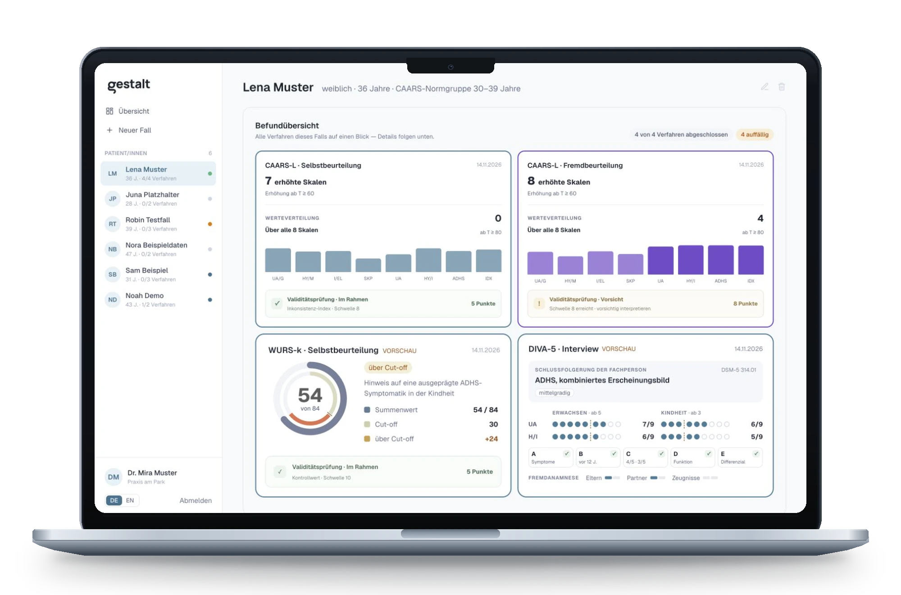
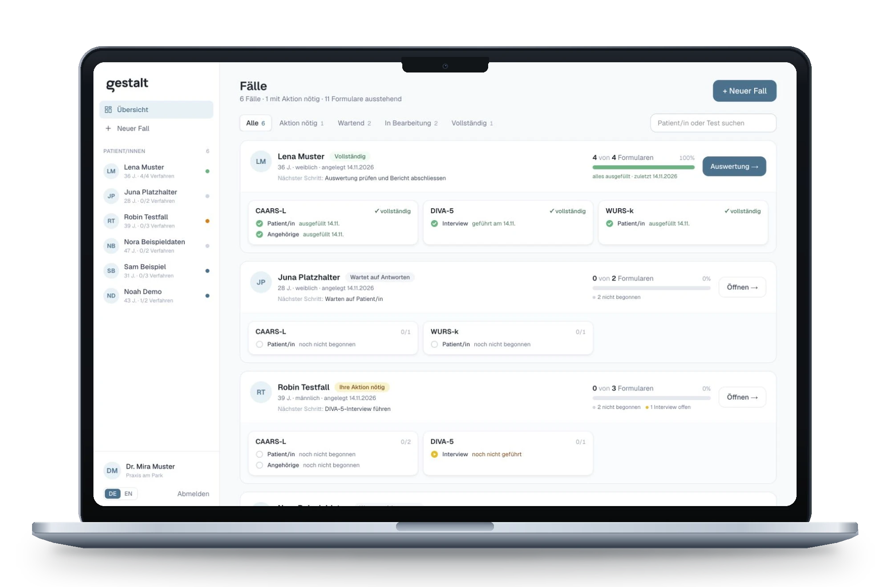
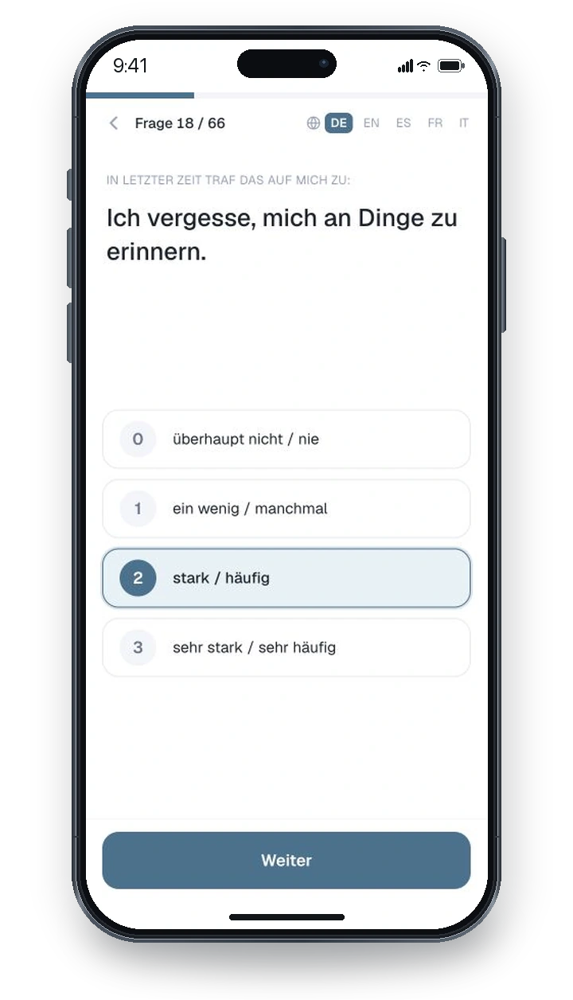
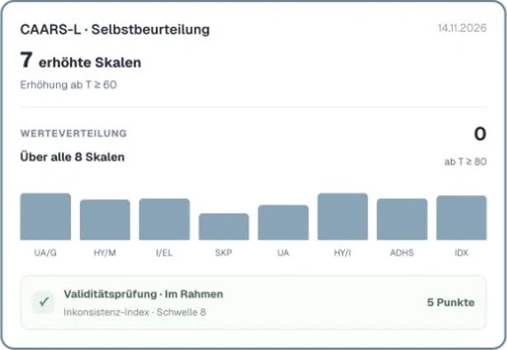
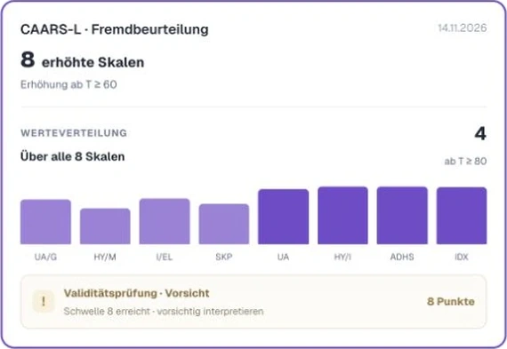
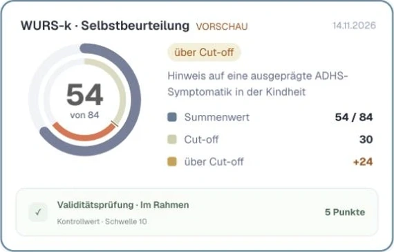
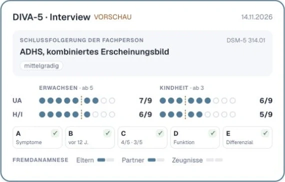
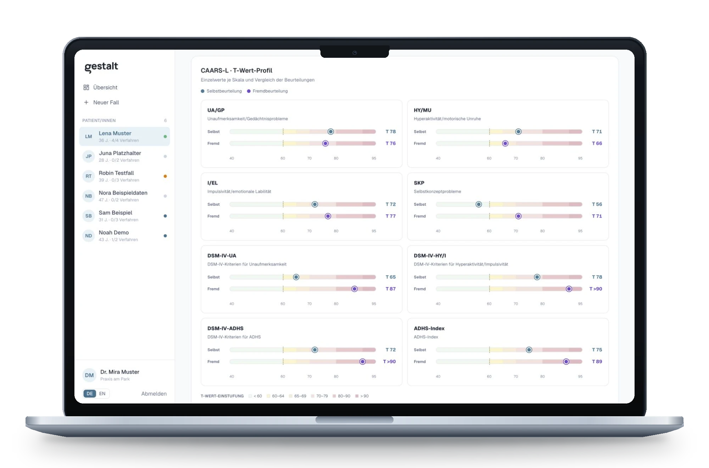
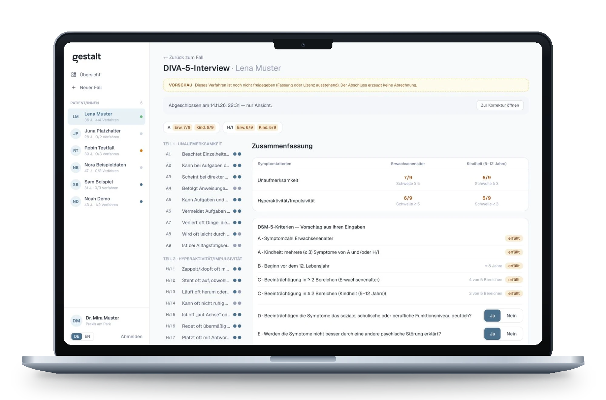
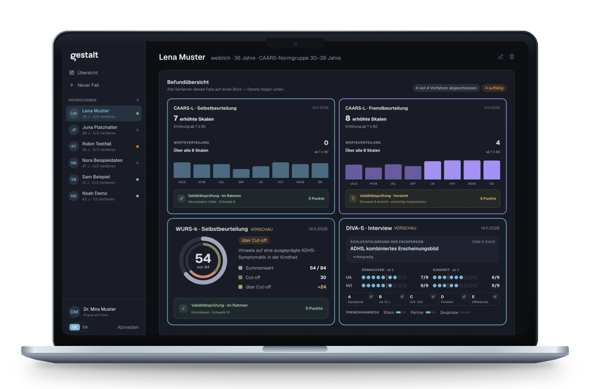

Product design case study · Clinical software
One ADHD diagnosis on paper18 to 30 hours
The same diagnosis with Gestalt15 to 20 minutes
A clinician spends 18 to 30 hours on a single ADHD diagnosis, and most of that time goes into paperwork. Gestalt cuts the work to 15 to 20 minutes per patient. Clinics can take on more patients, and their waiting lists shrink dramatically.

Where the hours go
An adult ADHD assessment still runs on paper. The clinician sends questionnaires to the patient and waits until they come back. Then every answer is added up by hand and looked up in printed norm tables. As long as that takes 18 to 30 hours per person, a clinician cannot take on more patients.
On paper 18 to 30 hours
With Gestalt 15 to 20 minutes
One square is 20 minutes of a clinician's time. The outlined squares are the range between 18 and 30 hours.
More patients per clinician
The hours that used to go into paperwork are free for patients.
Shorter waiting lists
A clinic that finishes more diagnoses each week shrinks its waiting list dramatically.
Faster, accurate diagnoses
Gestalt connects the dots between the instruments, so the clinician sees the full picture sooner.
How a case runs
The clinician opens a case and chooses the instruments. The patient and a relative each get a link and answer on their own phone, without an account or an app.
-
01
The clinician opens the case
They choose the instruments and send the links from their own email.
-
02
Patient and relative answer
Each screen shows one question and nothing else, because the person answering is being assessed for attention problems.
-
03
The results arrive scored
When the last form comes in, the T-scores, the validity checks and a draft report are ready.


Every instrument has its own graphic
Each instrument measures something different, so each has its own colour and its own way of showing a result. Clinicians recognise a result by its shape before they read the title.






One design system, two themes
All screens use the same tokens for colour, type and spacing, so the dark theme needed no second design.

Rules for patient data and AI
Gestalt holds class 4 client data, which here means psychiatric health information. I built it with AI coding agents, so I set the rules for data and AI before I designed the first screen.
Encrypted end to end
Client data stays encrypted all the way from the patient's phone to the clinician's screen.
AI wrote code and never saw patient data
AI agents helped me write the software. The scoring is ordinary code that I tested against the official norm tables, and no patient answer goes to an AI model.
The clinician makes the diagnosis
Gestalt scores and compares. It marks its own output as a suggestion and leaves the diagnosis to the clinician.
As little data as possible
Patients need no account, a relative sees only a first name and an initial, and every link works once.
What I did
I built Gestalt from zero with a professor from Harvard and in collaboration with researchers from ETH Zurich. The research, the product decisions, the design and the code are my work.
Interviews with physicians about how an assessment runs in practice.
The case flow, the roles and billing per form.
One design system, two themes and a graphic for each instrument.
The full app in Next.js and TypeScript, including the scoring for every instrument.
Gestalt is currently in a private test with clinicians. Instruments whose licence is still open run as a preview, which is why some screens carry the label "Vorschau".